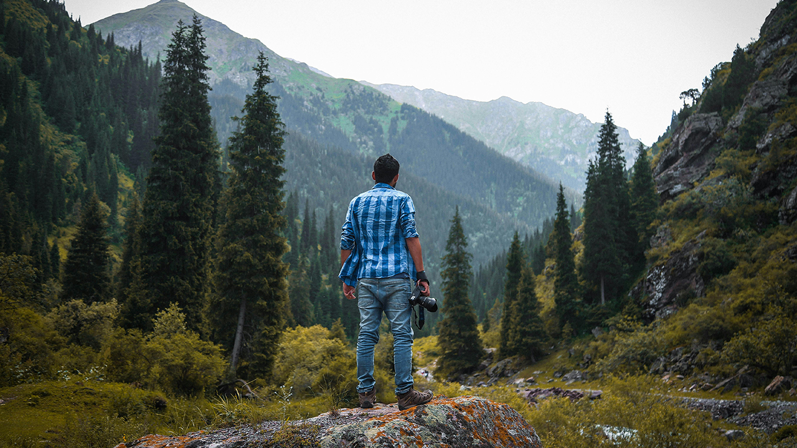
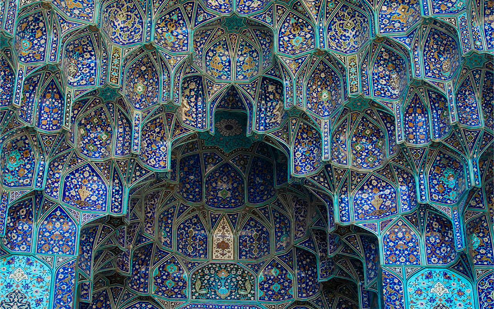
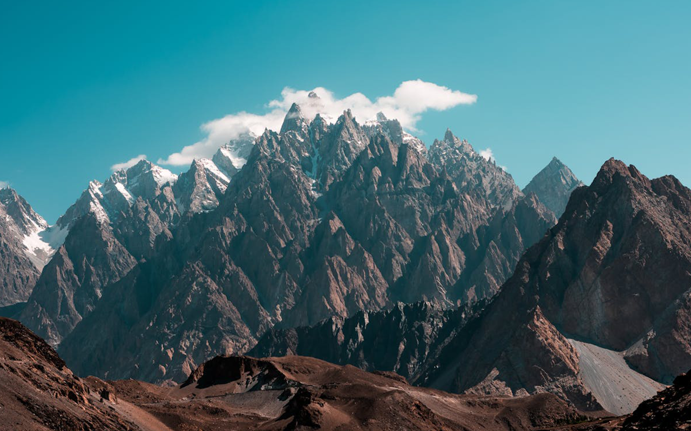
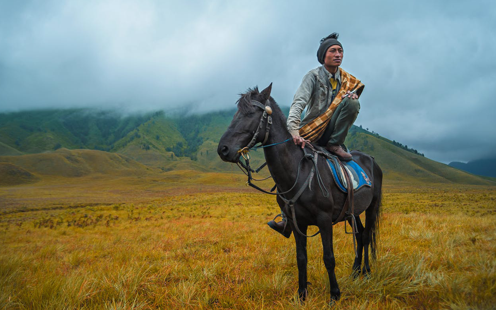
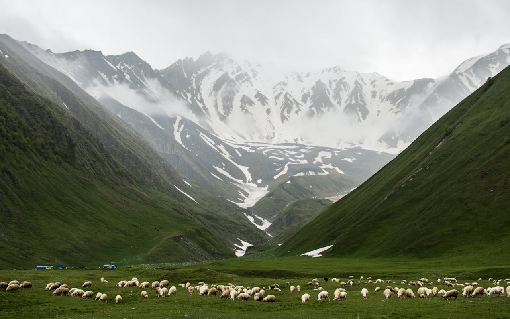

Explore handpicked destinations, authentic local experiences, and seamless travel planning tailored to your style of adventure. From breathtaking landscapes to immersive cultural encounters, every journey is thoughtfully designed to turn your dream trip into reality. Step beyond the ordinary and discover carefully crafted experiences that inspire, connect, and transform the way you see the world.





"Traveling – it leaves you speechless, then turns you into a storyteller."
Ibn Battuta (Moroccan Explorer, 1304–1369)
"He who travels widely gains knowledge of people, their customs, and the earth they inhabit."
Ibn Khaldun (Tunisian Historian & Scholar, 1332–1406)
"A journey is a witness to the world; it teaches the traveler what books cannot."
Ibn Fadlan (Arab Traveler, 10th Century)
Discover the world with curated travel experiences. Choose your destination, plan your journey, and let us handle the details so you can focus on the adventure.